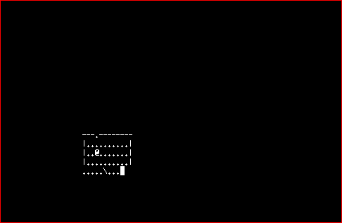

One of the nastiest problems TAEB has to solve is also one of the most mundane. If you've ever played a game over a network or on a heavily loaded computer, you are probably familiar with lag and the problems it creates. While NetHack, as a turn-based game, does not suffer from directly lag-caused deaths, it is still very difficult to make moves sensibly when the responses are delayed.
Bots like TAEB also suffer from lag, indeed much worse than people do. Twenty milliseconds is quite unnoticeable for a human but is an eternity for a bot, and even at that timescale issues of finding the end of a turn are normal. Furthermore, bots are much less able to recover from partial updates than people are, due to the lack of sensible error-recovery.
Presumably, the player just exited a full-screen menu or changed dungeon level. A full screen redraw for NetHack is larger than the MTU of most networks, and due to lag, the second packet has been delayed significantly. (This doesn't require weird conditions; TCP normally waits until data has been successfully received before sending more.) As a result, the lower half of the current frame is black. TAEB, on seeing this frame, makes a couple of damaging inferences:
Clearly, bots need a reliable way to tell when NetHack is done sending output for the turn. There have been several approaches to this problem over the years.
One of the oldest and simplest approaches is simply to sleep for one second or so after every move, to wait for NetHack. This works, most of the time. It has two major flaws; first it is very slow, second it is unreliable - if lag spikes above 1 second, the bot may see an incomplete frame. Nevertheless, it is very simple to implement and has been used in several efforts.
Another approach which has been historically used, most famously by the Angband Borg and Rog-o-matic, is to link the bot into the game's input routines. In theory, this is foolproof, but it carries dangers of a different sort, in addition to the obvious restriction to local games.
If done incautiously, the linking can affect game mechanics or leak information, thus compromising the validity of the bot effort. Modifying the game requires a very in-depth knowledge of NetHack's implementation, which is very unclean and non-transparent in places. Furthermore, requiring the bot to be linked into NetHack greatly complicates the build process; the bot cannot be built or distributed as a self-contained object unless all of NetHack is duplicated, prohibitive effort for many starting projects. As such, the linking approach is very rarely used.
We want TAEB to play in tournaments on public servers, which precludes linking.
One approach which is often proposed, but sadly does not work, is the inline ping. Simply send an invalid command after every real command, and wait for the error. Unfortunately, there is no command which is invalid in every context in NetHack. Not even control-r to redraw the screen; it fails in prompts and menus.
Invented by Sartak for NetHack fairly early on, and the most common method in use today (in particular, TAEB uses this), this relies on telnet as a side channel. A bot connects to a telnet server using a raw TCP socket, and implements the protocol itself; after every command is sent, the bot attempts to negotiate an invalid telnet stream option (DO 99).
When a telnet daemon receives the packet containing the command, it sees an option it does not support and responds in failure (WONT 99), then passes the command off to NetHack. Shortly afterward, NetHack's response is responded to the bot. Thus, the bot receives NetHack's response very shortly after the "pong". In effect, the telnet options are used as a side channel to dynamically measure network lag. Since under normal conditions network lag is the dominant component of total lag, this gives the bot a very good idea of when the output should be expected.
The reliability of this approach is improved by kernel packet coalescing, also known as Nagle's algorithm. When the pong is sent, the network implementation at the server waits a short time to potentially send a larger packet; if packet sending is low-priority, this will additionally tend to be delayed until NetHack is done calculating. With the pong and the response generally in the same packet, they are guaranteed to arrive at the bot at exactly the same time.
While good enough for bots, this approach is not quite foolproof. If NetHack takes a long time to reply to a command, due to system load, slow execution (there are several quadratic algorithms in the game, most notably monster movement and item stack sorting), or simply being swapped out, it is possible for the kernel to time out the attempt to coalesce, and the pong will arrive significantly before the output. This has been the source of several unreproducable errors in TAEB.
This approach is also limited to telnet servers. It does not help at all with lag as it occurs on heavily-loaded local systems, and does not work well with other network protocols. In principle SSH could be used, however the vastly higher complexity of the SSH protocol makes a custom implementation prohibitively difficult.
Will Noble (futilius)'s bridey works on an entirely different principle from the other bots. Instead of relying on out-of-band data to find complete frames, bridey is more like a human in that it waits for a frame that looks complete. The code which generates actions also provides a predicate for a sensible-looking result; fully filled bottom line, cursor on the character, etc. When an action is run, bridey waits for a frame that satisfies the predicate. To guard against programming oversights, the predicates are made partially dependant on wait time, and become more lenient as more data has had a chance to arrive.
Actually, bridey combines this with other mechanisms above; the time, as it is used in predicates, is measured in telnet ping/pong cycles. For instance, the move action has a final timeout of 4 cycles. This allows the reliability of the expect system to partially stack on the reliability of ping/pong. bridey, like TAEB, uses simple sleeps on the local interface.
In 2008 I developed a novel method, which is currently being adopted by TAEB for the local interface. NetHack is single threaded and makes very little use of asynchronous calls, so when it is blocked on tty input it cannot possibly generate output until more keys arrive. So, if we could somehow find out when NetHack blocks, we would solve the synchronization problem permanently - unlike the methods above, this is immune to system load.
On the surface, finding out when a process blocks would seem to require low-level, privileged, and generally highly nonportable code. However, we are not the first user of the information. It is possible in UNIX to move processes between the foreground and background at will; if it were possible for background processes to read keyboard input, chaos would result. The traditional solution is for the kernel to stop any process when it attempts to read in the background. Stops, like deaths, result in wait() events; this is necessary in order that the shell may continue them.
With this insight, the solution seems fairly obvious - simply put NetHack in the background, then when it stops, let it read. There are a few complications in this, though. First, it's not possible to simply shovel data into a stopped reader; it has to be briefly continued in the foreground. How long is briefly? Depends on... system load. Fortunately, there is a trick we can use to eliminate inaccuracy - check for data on the virtual keyboard, with ourselves in the foreground. If we see anything, the slave needs to read more, and we re-continue it, using exponential backoff. Of course, data typed is not always immediately available due to line-buffering and various forms of special-key processing - but that applies to us too, so we still get the right answer.
Even with that settled, POSIX only allows a process to use job control if it lives inside the pseudo-terminal. That means, we need to fork a slave in order to do the actual manipulation, and communicate using pipes.
This is very unusual activity terminal driver, and it has exposed two bugs in the BSD kernel so far. First, in all known versions of BSD, a process which reads in the background does not actually receive the stop signal until it returns to user mode; but it returns to user mode only once the wait for terminal data completes! In regular usage, this is masked, because when you type bg all waiting threads are woken, but it was a killer for us; the eventual workaround I found was to briefly change the terminal blocking mode, thus forcing the kernel to reconsider all active blocks. Finding this bug, and the workaround for it, took an annoyingly long amount of time.
Another bug the project found was that the BSD kernel does a one-second sleep whenever a process that is already in the background tries to read. The reasons for this are quite unclear, but it has the effect of killing performance of this approach. Fortunately, recent versions of Darwin (OS 10.5.7 is known to work) have a rewritten sleep system, and this call is no more.
A comparatively minor issue was found in Linux; attempting to read from an idle psuedoterminal master fails with a "No such device" error, instead of the EOF return that would be expected of devices with pipe semantics. I'm not sure if this is a bug, but it did require workaround code.
This method is implemented in the IO::Pty::HalfDuplex perl module.
Job control abuse works pretty well on Linux and Darwin, but what if you're on a different platform? Well, there's always low-level, privileged, and generally non-portable code. As seems to often be the case with hacks like this, it usually takes the form of a debugger API abuse; set breakpoints on the functions that can read from the terminal, and arrange to capture output somehow. These approaches share a common liability; debugger interfaces are highly security-sensitive and are often in some way disabled.
I plan to implement most of these in IO::Pty::HalfDuplex.
In the field of bot writing, even the simplest things can prove almost insurmountably complex. This is very evident in dealing with lag, both network and loading. Lag-related problems are a major cause of unreproducable faults in even the most sophisticated NetHack bots. Many of the simplest approaches to controlling lag are deeply flawed and will make debugging difficult. Let this be a lesson to everyone who wants to start from scratch. Fortunately, you don't have to; TAEB is designed to be a framework, to support additional AIs easily.